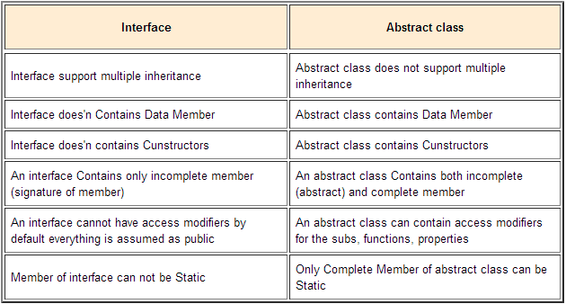
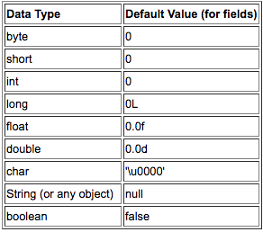
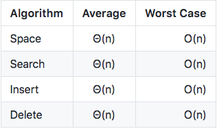
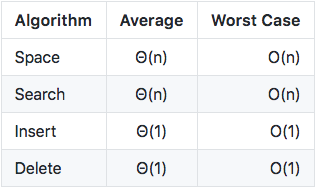
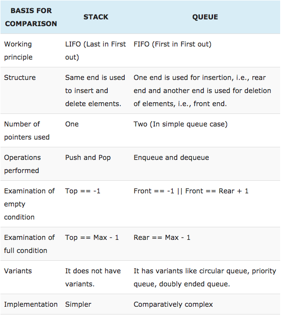

Android Interview Questions Cheat Sheet — Part II
This article focuses on the Java part of the interview.
- Why is Java said to be platform independent?
The execution of the code does not depend upon the OS
- Difference between ‘throw’ and ‘throws’ in Java Exception Handling?
throw keyword is used to throw Exception from any method or static block whereas throws is used to indicate that which Exception can possibly be thrown by this method.
- Is there ever a scenario where we can skip the finally block in a try catch?
By Calling System.exit(0) in try or catch block, we can skip the finally block. System.exit(int) method can throw a SecurityException. If System.exit(0) exits the JVM without throwing that exception then finally block will not execute. But, if System.exit(0) does throw security exception then finally block will be executed.
- What are anonymous classes?
An anonymous class is just what its name implies — it has no name. It combines the class declaration and the creation of an instance of the class in one step. Since anonymous classes have no name, objects can not be instantiated from outside the class in which the anonymous class is defined. In fact, an anonymous object can only be instantiated from within the same scope in which it is defined. Rules:
-
An anonymous class must always extend a super class or implement an interface but it cannot have an explicit extends or implements clause.
-
An anonymous class must implement all the abstract methods in the super class or the interface.
-
An anonymous class always uses the default constructor from the super class to create an instance.
Example:
MyButton.setOnClickListener(new Button.OnClickListener {
@override
public void onClick(View view){
//some code
}
});
- Why is the main method static in java?
The method is static because otherwise there would be ambiguity on which method to be called. If static is removed from the main method, Program compiles successfully . But at runtime throws an error “NoSuchMethodError”. We can overload the main method in Java. But the program doesn’t execute the overloaded main method when we run your program, we need to call the overloaded main method from the actual main method only. To run a method without calling this main method, we would need to execute a static block. In order to avoid NoSuchMethodError, we can call System.exit(0) after the static method. Note: Any method declared static will be executed even before the main class is executed.
Example:
public class Hello {
static {
System.out.println("Hello, World!");
}
}
- What is garbage collector? How does it work?
All objects are allocated on the heap area managed by the JVM. As long as an object is being referenced, the JVM considers it alive. Once an object is no longer referenced and therefore is not reachable by the application code, the garbage collector removes it and reclaims the unused memory.
- Difference between stack memory & heap memory?
Stack is used for static memory allocation and Heap for dynamic memory allocation, both stored in the computer’s RAM . Variables allocated on the stack are stored directly to the memory and access to this memory is very fast, and it’s allocation is dealt with when the program is compiled. When a function or a method calls another function which in turns calls another function etc., the execution of all those functions remains suspended until the very last function returns its value. The stack is always reserved in a LIFO order, the most recently reserved block is always the next block to be freed. This makes it really simple to keep track of the stack, freeing a block from the stack is nothing more than adjusting one pointer. Variables allocated on the heap have their memory allocated at run time and accessing this memory is a bit slower, but the heap size is only limited by the size of virtual memory . Element of the heap have no dependencies with each other and can always be accessed randomly at any time. You can allocate a block at any time and free it at any time. This makes it much more complex to keep track of which parts of the heap are allocated or free at any given time. You can use the stack if you know exactly how much data you need to allocate before compile time and it is not too big. You can use heap if you don’t know exactly how much data you will need at runtime or if you need to allocate a lot of data. In a multi-threaded situation each thread will have its own completely independent stack but they will share the heap. Stack is thread specific and Heap is application specific. The stack is important to consider in exception handling and thread executions. Heap memory is used by all the parts of the application whereas stack memory is used only by one thread of execution. Whenever an object is created, it’s always stored in the Heap space and stack memory contains the reference to it. Stack memory only contains local primitive variables and reference variables to objects in heap space. Objects stored in the heap are globally accessible whereas stack memory can’t be accessed by other threads. Memory management in stack is done in LIFO manner whereas it’s more complex in Heap memory because it’s used globally. Heap memory is divided into Young-Generation, Old-Generation etc, more details at Java Garbage Collection. Stack memory is short-lived whereas heap memory lives from the start till the end of application execution. When stack memory is full, Java runtime throws java.lang.StackOverFlowError whereas if heap memory is full, it throws java.lang.OutOfMemoryError: Java Heap Space error. Stack memory size is very less when compared to Heap memory. Because of simplicity in memory allocation (LIFO), stack memory is very fast when compared to heap memory.
- Explain OOPs concept
Object Oriented Programming is a programming style that involves concepts such as Classes, objects, Abstraction, Encapsulation, Inheritance, Polymorphism.
- What is Inheritance?
Inheritance is the process by which objects of one class acquire the properties & objects of another class. The two most common reasons to use inheritance are:
a) To promote code reuse. b) To use polymorphism.
- Does Java support multiple inheritance?
Java supports multiple inheritance by interface only since it can implement multiple interfaces but can extend only one class.
- What is Encapsulation?
Encapsulation involves binding code and data together as a single unit. Encapsulation is a technique used for hiding the properties and behaviours of an object and allowing outside access only as appropriate. It prevents other objects from directly altering or accessing the properties or methods of the encapsulated object. For instance, a class can be an encapsulated class if all the variables in it are defined as Private and by providing getter and setter methods.
-
What is Abstract class? Abstract classes are classes that contain one or more abstract methods. An abstract method is a method that is declared, but contains no implementation. If even a single method is abstract, the whole class must be declared abstract. Abstract classes may not be instantiated, and require subclasses to provide implementations for the abstract methods. You can’t mark a class as both abstract and final. Non-abstract methods can access a method that you declare as abstract.
-
What are Interfaces? Interfaces are only declared methods that an implementing class would need. Interfaces cannot be marked as final. Interface variables must be static or final. Interfaces cannot be instantiated directly. Marker Interfaces: Marker interfaces are those which do not declare any required Methods. The java.io.Serializable interface is a typical marker interfaces. These do not contain any methods, but classes must implement this interface in order to be serialized and de-serialized.
-
Difference between Abstract and Interfaces? Abstract classes can have non abstract methods. It can have instance variables. We have provide default implementation to abstract class method. A class can extend only one abstract class.A class can implement multiple interfaces.

-
What is Polymorphism? Polymorphism is when an object takes on multiple forms. For instance, String is a subclass of Object class. Polymorphism manifests itself in Java in the form of multiple methods having the same name. In some cases, multiple methods have the same name, but different formal argument lists (overloaded methods). In other cases, multiple methods have the same name, same return type, and same formal argument list (overridden methods). Polymorphism is a characteristic of being able to assign a different meaning or usage to something in different contexts — specifically, to allow an entity such as a variable, a function, or an object to have more than one form. 2 forms of polymorphism: Compile time polymorphism: The flow of control is decided during the compile time itself. By overloading. Run time polymorphism: is done using inheritance and interface. The flow of control is decided during the runtime. Overriding: Overriding will have the same method name with the same parameters. One will be the parent class method and the other will be the child class method. Overloading occurs when the same method name is declared but with different parameters.
-
What is Method overloading? Method Overloading means to have two or more methods with same name in the same class with different arguments. Note: Overloaded methods MUST change the argument list Overloaded methods CAN change the return type Overloaded methods CAN change the access modifier Overloaded methods CAN declare new or broader checked exceptions A method can be overloaded in the same class or in a subclass
-
What is Method overriding? Method overriding occurs when sub class declares a method that has the same type arguments as a method declared by one of its superclass You can’t override a method marked public and make it protected You cannot override a method marked final You cannot override a method marked static Note: Static methods cannot be overridden. Overloaded methods can still be overridden.
-
Why would you not call abstract method in constructor? The problem is that the class is not yet fully initialised, and when the method is called in a subclass, it may cause trouble.
-
Composition over inheritance? Composition is typically “has a” or “uses a” relationship. In the below example, the Employee class has a Person. It does not inherit from Person but instead gets the Person object passed to it, which is why it is a “has a” Person.
class Person {
String Title;
String Name;
Int Age;
public Person(String title, String name, String age) {
this.Title = title;
this.Name = name;
this.Age = age;
}
}
class Employee {
Int Salary;
private Person person;
public Employee(Person p, Int salary) {
this.person = p;
this.Salary = salary;
}
}
-
Difference between Encapsulation & Abstraction? Abstraction focuses on the outside view of an object (i.e. the interface) Encapsulation (information hiding) prevents clients from seeing it’s inside view. Abstraction solves the problem in the design side while Encapsulation is the Implementation.
-
Constructors vs Methods? Constructors must have the name as the class name and does not have a return type. It can be used to instantiate any objects in the class whereas methods have no such rule and is another member of the class. Constructors cannot be inherited but a derived class can call the super constructor of parent class. this(): Constructors use this to refer to another constructor in the same class with a different parameter list. super(): Constructors use super to invoke the superclass’s constructor. Methods: Instance methods on the other hand require an instance of the class to exist before they can be called, so an instance of a class needs to be created by using the new keyword. Class methods are methods which are declared as static. The method can be called without creating an instance of the class.
-
What is the difference between instantiation and initialisation of an object? Initialisation is the process of the memory allocation, when a new variable is created. Variables should be explicitly given a value, otherwise they may contain a random value that remained from the previous variable that was using the same memory space. To avoid this problem, Java language assigns default values to data types. Instantiation is the process of explicitly assigning definitive value to a declared variable.
-
Do objects get passed by reference or value in Java? Elaborate on that. Java is always pass-by-value. When we pass the value of an object, we are passing the reference to it. Java creates a copy of the variable being passed in the method and then does the manipulations. Hence the change is not reflected in the main method. But when you pass an object reference into a method, a copy of this reference is made, so it still points to the same object. This means, that any changes that you make to the insides of this object are retained, when the method exits. Java copies and passes the reference by value, not the object. Thus, method manipulation will alter the objects, since the references point to the original objects. But since the references are copies, swaps will fail.
-
Primitives in Java?

- Difference between == and .equals() method in Java? We can use == operators for reference comparison (address comparison) and .equals() method for content comparison.
- In simple words, == checks if both objects point to the same memory location whereas .equals() evaluates to the comparison of values in the objects.
-
Why strings are Immutable? Once a value is assigned to a string it cannot be changed. And if changed, it creates a new object of the String. This is not the case with StringBuffer.
-
What is String.intern()? When and why should it be used? String.intern() method can be used to to deal with String duplication problem in Java. By carefully using the intern() method you can save a lot of memories consumed by duplicate String instances. A string is duplicate if it contains the same content as another string but occupied different memory location. By calling the intern() method on a string object, for instance “abc”, you can instruct JVM to put this String in the pool and whenever someone else creates “abc”, this object will be returned instead of creating a new object. This way, you can save a lot of memory in Java, depending upon how many Strings are duplicated in your program. When the intern method is invoked, if the String pool already contains that String object such that equals() return true, it will return the String object from the pool, otherwise it will add that object to the pool of unique String.
-
String pool in Java: String Pool in java is a pool of Strings stored in Java Heap Memory. When we use double quotes to create a String, it first looks for String with same value in the String pool, if found it just returns the reference else it creates a new String in the pool and then returns the reference. However using new operator, we force String class to create a new String object in heap space. We can use intern() method to put it into the pool or refer to other String object from string pool having same value. For example, how many strings are getting created in below statement;
String str = new String("Cat");
In above statement, either 1 or 2 string will be created. If there is already a string literal “Cat” in the pool, then only one string “str” will be created in the pool. If there is no string literal “Cat” in the pool, then it will be first created in the pool and then in the heap space, so total 2 string objects will be created.
-
Final modifier? Final modifiers — once declared cannot be modified. A blank final variable in Java is a final variable that is not initialised during declaration. final Classes- A final class cannot have subclasses. final Variables- A final variable cannot be changed once it is initialised. final Methods- A final method cannot be overridden by subclasses.
-
Finalize keyword? Finalize is a method used to perform clean up processing just before object is garbage collected.
-
Finally keyword? finally is a code block and is used to place important code, it will be executed whether exception is handled or not.
-
Static variables? Variables that have only one copy per class are known as static variables. They are not attached to a particular instance of a class but rather belong to a class as a whole. A static variable is associated with the class as a whole rather than with specific instances of a class. Non-static variables take on unique values with each object instance.
-
What is reflection? Java Reflection makes it possible to inspect classes, interfaces, fields and methods at runtime, without knowing the names of the classes, methods etc. at compile time. It is also possible to instantiate new objects, invoke methods and get/set field values using reflection.
-
Multi threading? Multiple tasks are running concurrently in a program.
-
Fail-fast & Fail-Safe? Fail-fast Iterators throws ConcurrentModificationException when one Thread is iterating over collection object and other thread structurally modify Collection either by adding, removing or modifying objects on underlying collection. They are called fail-fast because they try to immediately throw Exception when they encounter failure. On the other hand fail-safe Iterators works on copy of collection instead of original collection.
-
What does the keyword synchronized mean? When you have two threads that are reading and writing to the same ‘resource’, say a variable named ‘test’, you need to ensure that these threads access the variable in an atomic way. Without the synchronized keyword, your thread 1 may not see the change thread 2 made to test. synchronized variables blocks the next thread’s call to method as long as the previous thread’s execution is not finished. Threads can access this method one at a time.
-
What does the keyword volatile mean? Suppose two threads are working on a method. If two threads run on different processors each thread may have its own local copy of variable. If one thread modifies its value the change might not reflect in the original one in the main memory instantly. Now the other thread is not aware of the modified value which leads to data inconsistency.Essentially, volatile is used to indicate that a variable’s value will be modified by different threads. ‘volatile’ tells the compiler that the value of a variable must never be cached as its value may change outside of the scope of the program itself. The value of this variable will never be cached thread-locally: all reads and writes will go straight to ‘main memory’ An access to a volatile variable never has the potential to block: we’re only ever doing a simple read or write, so unlike a synchronized block we will never hold on to any lock.
-
What is Autoboxing and Unboxing? Autoboxing is the automatic conversion that the Java compiler makes between the primitive types and their corresponding object wrapper classes. For example, converting an int to an Integer, a double to a Double, and so on. If the conversion goes the other way, this is called unboxing.
-
Optionals in Java? Optional is a container object which is used to contain not-null objects. Optional object is used to represent null with absent value. This class has various utility methods to facilitate code to handle values as ‘available’ or ‘not available’ instead of checking null values.
-
What is externalization? In serialization, the JVM is responsible for the process of writing and reading objects. This is useful in most cases, as the programmers do not have to care about the underlying details of the serialization process. However, the default serialization does not protect sensitive information such as passwords and credentials. Thus externalization comes to give the programmers full control in reading and writing objects during serialization. Implement the java.io.Externalizable interface — then you implement your own code to write object’s states in the writeExternal() method and read object’s states in the readExternal() method.
-
What are Data Structures? Intentional arrangement of a collection of data. There are 5 fundamental behaviours of a data structure: access, insert, delete, find & sort.
-
Explain Big O Notation? The notation Ο(n) is the formal way to express the upper bound of an algorithm’s running time. It measures the worst case time complexity or the longest amount of time an algorithm can possibly take to complete. Note: O(1) means that it takes a constant time, like three minutes no matter the amount of data in the set. O(n)means it takes an amount of time linear with the size of the set.
-
Explain Big Omega Notation The Big Omega Notation is used to describe the best case running time for a given algorithm.
-
Arrays in Java? Arrays is an ordered collection. It will have a fixed length which needs to be defined at the initialisation time whereas lists have a variable length. Arrays are easier to store elements of the same data type. Used internally in stack and queue. It is a convenient way of representing a 2D array. Arrays cannot hold generic data types whereas lists can. Arrays can store all data types whereas lists cannot store primitive data types, only objects.

- Linked Lists in Java? A LinkedList contains both a head and a tail. The “Head” is the first item in the LinkedList, while the “Tail” is the last item. It is not a circular data structure, therefore the tail does not have its’ pointer pointing at the Head — the pointer is just null. No indices but each node has a pointer pointing to the next element. They are dynamic in nature which means they allocate memory only when needed. Insertion, deletion, updation is easy A linked list is a group of nodes which represent a sequence. Each node consists of a data and a link or reference to the next node in the sequence. Singly Linked List: has a node and a pointer to the next node in the sequence. Doubly Linked List: has a node and 2 pointers — one to the next node and one to the previous node in the sequence. This is very convenient if you need to be able to traverse stored elements in both directions.

-
Binary Trees A tree whose elements have at most 2 children is called a binary tree. Since each element in a binary tree can have only 2 children, we typically name them the left and right child. The left subtree of a node contains only values less than the parent node’s value. The right subtree of a node contains only values greater than or equal to the node’s value. Only if the above 2 criteria are matched, then the tree is said to be balanced. Advantages of Binary tree over Linked List: In a linked list, the items are linked together through a single next pointer. In a binary tree, as long as the tree is balanced, the search path to each item is a lot shorter than that in a linked list. Their disadvantage is that in the worst case they can degenerate into a linked list in terms of efficiency.
-
Stacks: Stacks are an abstract collection that follow LIFO mechanism. Main functionalities include: Push: a new entity added to the top of the stack. Pop: an entity is removed from the top of the stack. The process of accessing data stored in a serial access memory is similar to manipulating data on a stack. A stack may be defined to have a bounded capacity i.e. if the stack is full and a new entity cannot be added, then it is considered to be in an overflow state. If the stack is empty and an entity cannot be popped, it is considered to be in an underflow state. Efficiency of stacks: The time is not dependent of the no of items in the stack so it is very efficient. O(1).
-
Queues: Queues are an abstract collection that follow FIFO mechanism. The entities in the queue are kept in an order. Main functionalities include: enqueue: Add an item to the end of the queue. Dequeue: remove an item from the start of the queue. Front: retrieves the first item from the queue. A queue may be defined to have a bounded capacity i.e. if the queue is full and a new entity cannot be added, then it is considered to be in an overflow state. If the queue is empty and an entity cannot be popped, it is considered to be in an underflow state. Efficiency of queues: The time is not dependent of the no of items in the queue so it is very efficient. O(1). A double ended queue (deque): is an abstract collection which differs from queue in a way that an item can be added/removed from either side of the queue. An input-restricted deque: is when deletion takes place at either end but insertion takes place at only one end. An output-restricted deque: is when insertion takes place at either end but deletion takes place only at one end. A common occurrence of deque is doubly linked list. Priority queue: same as queue but has a priority associated with it. Items are retrieved based on their priority.
-
Blocking Queues: A blocking queue is a queue that blocks when you try to dequeue from it and the queue is empty, or if you try to enqueue items to it and the queue is already full. A thread trying to dequeue from an empty queue is blocked until some other thread inserts an item into the queue. A thread trying to enqueue an item in a full queue is blocked until some other thread makes space in the queue.
Example on implementing a blocking queue
- Difference between stacks & queues?

-
What is a deadlock in Java A deadlock occurs when a thread enters a waiting state because a requested system resource is held by another waiting process, which in turn is waiting for another resource held by another waiting process. Example on how deadlock occurs Example on how to prevent deadlock
-
What is the List interface & Set interface? List interface supports for ordered collection of objects and it may contain duplicates. The Set interface provides methods for accessing the elements of a finite mathematical set. Sets do not allow duplicate elements
-
Difference between ArrayList & Vectors? Vectors are thread safe (synchronized) whereas arraylists are not. So performance of arraylists are better than vectors. *In ArrayList, you have to start searching for a particular element from the beginning of an Arraylist. But in the Vector, you can start searching for a particular element from a particular position in a vector. This makes the search operation in Vector faster than in ArrayList. Vectors have a default size of 10 whereas arraylists size can be dynamic.
-
Insertion and deletion in ArrayList is slow compared to LinkedList? ArrayList internally uses an array to store the elements, when that array gets filled by inserting elements a new array of roughly 1.5 times the size of the original array is created and all the data of old array is copied to new array. During deletion, all elements present in the array after the deleted elements have to be moved one step back to fill the space created by deletion. In linked list data is stored in nodes that have reference to the previous node and the next node so adding element is simple as creating the node and updating the next pointer on the last node and the previous pointer on the new node. Deletion in linked list is fast because it involves only updating the next pointer in the node before the deleted node and updating the previous pointer in the node after the deleted node.
-
Implementations of Map? TreeMap: sorted based on ascending order of keys. For inserting, deleting, and locating elements in a Map, the HashMap offers the best alternative. If, however, you need to traverse the keys in a sorted order, then TreeMap is your better alternative. HashTable: Does not allow null values. It is not fail-safe and it is synchronized whereas HashMap allows null values and it is fail-safe and it is not synchronized. LinkedHashMap: This is a subclass of Hashmap. The order of insertion is preserved since it has a linkedList.
-
Difference between Enumeration and Iterators? Enumeration does not include remove() method whereas iterators do. Enumerators act as read only interface as it provides methods to read and traverse through a collection. ListIterator: is just like an iterator except it allows access to the collection in either the forward or backward direction
-
How Hashmap works in Java? HashMap in Java works on hashing principle. It is a data structure which allows us to store object and retrieve it in constant time O(1) provided we know the key. When we call put method, hashcode() method of the key object is called so that hash function of the map can find a bucket location to store Entry object. If two different objects have the same hashcode: in this case, a linked list is formed at that bucket location and a new entry is stored as next node. After finding bucket location, we will call keys.equals() method to identify a correct node in LinkedList and return associated value object for that key in Java HashMap
-
Generics in Java Before generics, we can store any type of objects in collection i.e. non-generic. Now generics, forces the java programmer to store specific type of objects. Type-safety: We can hold only a single type of objects in generics. It doesn’t allow to store other objects. Type casting is not required: There is no need to typecast the object. Compile-Time Checking: It is checked at compile time so problem will not occur at runtime. The good programming strategy says it is far better to handle the problem at compile time than runtime. Example: Before Generics, we need to type cast.
List list = new ArrayList();
list.add("hello");
String s = (String) list.get(0); //typecasting
After Generics, we don’t need to typecast the object.
List list = new ArrayList();
list.add("hello");
String s = (String) list.get(0); //typecasting
A class that can refer to any type is known as generic class. Here, we are using T type parameter to create the generic class of specific type. The T type indicates that it can refer to any type (like String, Integer, Employee etc.).The type you specify for the class, will be used to store and retrieve the data. The ? (question mark) symbol represents wildcard element. It means any type. If we write <? extends Number>, it means any child class of Number e.g. Integer, Float, double etc.
Thanks for reading! Hope you find this useful. This is just a list of questions I personally found useful in interviews. This list is by no means exhaustive. Let me know your thoughts in the responses and don’t forget to clap if you found the article helpful. You can checkout the entire set of interview questions along with sample coding programs in Github. Happy Coding!